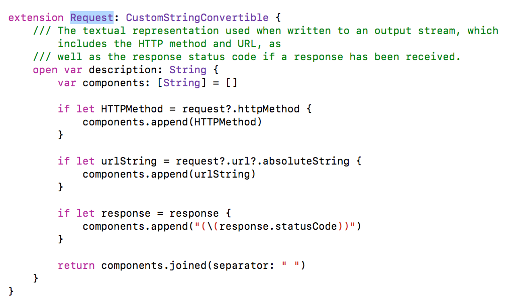

Swift中的协议(二)
1. Swift中各大类型的数量对比图
Swift从一开始就被设计成是面向协议开发的语言，解决了类似"飞机能飞但是不属于鸟类"继承存在的问题，同时Swift多出 结构体和枚举两大类型，三大类型都可以遵守协议，使得更加的灵活
2.Swift中的协议讲解
1. CustomStringConvertible, CustomDebugStringConvertible
这两个协议给Swift提供了优雅地打印对象的方法，类似于重写OC中的description方法； CustomDebugStringConvertible与CustomStringConvertible的区别在于会识别debug或者release环境， 如果是release就不会打印.实例：
OC:
- (NSString *)description
{
return [NSString stringWithFormat:@"name = %@", self.name];
}
Swift:
struct Person:CustomStringConvertible, CustomDebugStringConvertible {
var age: Int
var name: String
var job: String
var description: String{
return "age = \(age), name = \(name), job = \(job)"
}
var debugDescription: String{
return "debug age = \(age), name = \(name), job = \(job)"
}
}
未遵守协议之前的输出：
print(p):
Person(age: 1, name: "1", job: "1")
debugPrint(p):
AlamofireRead.Person(age: 1, name: "1", job: "1")
遵守之后的输出：
print(p):
age = 1, name = 1, job = 1
debugPrint(p):
debug age = 1, name = 1, job = 1
摘自Alamofire的打印Request的重写：
Equatable 是比较相关的协议，遵守协议表示实例能够用于相等的比价，需要重载==或者!=运算符
//自定义对象实现Equatable
struct Student:Equatable{
var name:String?
var height:Float?
//重写方法
public static func == (lhs: Student, rhs: Student) -> Bool{
return lhs.name == rhs.name && lhs.height == lhs.height
}
public static func != (lhs: Student, rhs: Student) -> Bool{
return lhs.name != rhs.name || lhs.height != lhs.height
}
}
let s1:Student = Student(name: "1", height: 11)
let s2:Student = Student(name: "2", height: 22)
//没实现Equatable协议前编译报错 实现后编译通过
print(s1 == s2) //true
print(s1 != s2) //false
Comparable是一个比较的协议，遵守Equatable协议, 包含< <= >= > ... ..<
struct Student:Equatable, Comparable{
var name:String?
var height:Float?
public static func == (lhs: Student, rhs: Student) -> Bool{
return lhs.name == rhs.name && lhs.height == lhs.height
}
public static func != (lhs: Student, rhs: Student) -> Bool{
return lhs.name != rhs.name || lhs.height != rhs.height
}
//重载Comparable
public static func < (lhs:Student, rhs:Student) -> Bool{
return lhs.name! < rhs.name! && lhs.height! < rhs.height!
}
let s1:Student = Student(name: "1", height: 11)
let s2:Student = Student(name: "2", height: 22)
//没实现Equatable协议前编译报错 实现后编译通过
print(s1 < s2) //true
//实现了Comparable的对象还可以判断范围：
...
let miniStu = Student(name: "0", height: 0)
let maxStu = Student(name: "9999", height: 9999)
let range2 = miniStu...maxStu
print(range2) //Student(name: Optional("0"), height: Optional(0.0))...Student(name: Optional("9999"), height: Optional(9999.0))
0...3 0..<3 3... ...3
let arr = [1,2,3,4,5,6,7,8]
print(arr[0...3], arr[0..<3], arr[3...], arr[...3])//[1, 2, 3, 4] [1, 2, 3] [4, 5, 6, 7, 8] [1, 2, 3, 4]
}
4. ExpressibleByArrayLiteral，ExpressibleByDictionaryLiteral，ExpressibleByStringLiteral
ExpressibleByArrayLiteral（Literal：逐字的） 提供了使用数组文本初始化的类型的能力，具体来说使用逗号分隔的值、实例、字面值列表; 类似的还有ExpressibleByStringLiteral,ExpressibleByDictionaryLiteral等
ExpressibleByArrayLiteral结构
public protocol ExpressibleByArrayLiteral {
/// The type of the elements of an array literal.
associatedtype ArrayLiteralElement 关联类型 可见要求类的属性类型一致
/// Creates an instance initialized with the given elements.
public init(arrayLiteral elements: Self.ArrayLiteralElement...)
}
ExpressibleByDictionaryLiteral结构
public protocol ExpressibleByDictionaryLiteral {
/// The key type of a dictionary literal.
associatedtype Key
/// The value type of a dictionary literal.
associatedtype Value
/// Creates an instance initialized with the given key-value pairs.
public init(dictionaryLiteral elements: (Self.Key, Self.Value)...)
}
ExpressibleByStringLiteral结构
public protocol ExpressibleByStringLiteral : ExpressibleByExtendedGraphemeClusterLiteral {
/// A type that represents a string literal.
///
/// Valid types for `StringLiteralType` are `String` and `StaticString`.
associatedtype StringLiteralType : _ExpressibleByBuiltinStringLiteral
/// Creates an instance initialized to the given string value.
///
/// - Parameter value: The value of the new instance.
public init(stringLiteral value: Self.StringLiteralType)
}
实例：
struct Cat:ExpressibleByArrayLiteral, ExpressibleByDictionaryLiteral{
var name:String?
var age:String?
var height:Float?
typealias ArrayLiteralElement = String
init(arrayLiteral elements: String...) {
if elements.count == 2 {
self.name = elements.first
self.age = elements.last
}
}
typealias Key = String
typealias Value = Float
init(dictionaryLiteral elements: (Key, Value)...) {
if elements.count == 1{
self.name = elements.first?.0
self.height = elements.first?.1
}
}
}
//一般实例化方式
let cat1 = Cat(name: "1", age: 1)
//实现ExpressibleByArrayLiteral协议之后用数组文本来初始化Cat类
let cat2 = ["zhangsan", "20"] //["zhangsan", "20"]
let cat3 = Cat(arrayLiteral: "lisi", "10") //Cat(name: Optional("lisi"), age: Optional("10"))
//实现ExpressibleByDictionaryLiteral协议之后用多个元祖文本来初始化Cat类
let cat4 = [("wangwu", 30)] //[("wangwu", 30)]
实例：用String类型赋值给Date
extension Date : ExpressibleByStringLiteral{
public init(stringLiteral value: String) {
let dateFormatter = DateFormatter()
dateFormatter.dateFormat = "yyyy-MM-dd"
guard let date = dateFormatter.date(from: value) else {
preconditionFailure("This date: \(value) is not invalid")
}
self = date
}
}
//实现ExpressibleByStringLiteral协议之后用字符串来初始化Date类
let date:Date = "1991-10-20"
关于哈希值：一个类型为了存储在集合Array Dictionary Set中，该类型必须是可哈希化的-该类型必须提供一种方法计算它的哈希值，一个哈希值为Int类型，相等的对象哈希值必须相同
Hashable的结构：
public protocol Hashable : Equatable {
/// The hash value.
///
/// Hash values are not guaranteed to be equal across different executions of
/// your program. Do not save hash values to use during a future execution.
public var hashValue: Int { get }
}
可见，Hashable遵守了Equatable协议，并提供了一个可读的属性hashValue。
Swift中标准库中所有的基本数据类型都是遵守 Hashable 协议的，它们包括字符串，整数，浮点数以及布尔值。
不带有关联值得枚举类型也会自动遵守 Hashable。
不带关联的枚举：
enum Color {
case red
case blue
}
print(Color.red.hashValue, Color.blue.hashValue) // 0 1
Dictionary的key要求实现Hashable协议，如果需要自定义key，则必须遵守Hashable并实现hashValue。
实现必须保证哈希不变原则：两个同样的实例（由你实现的 == 定义相同），必须拥有同样的哈希值。不过反过来不必为真：两个相同的哈希值的实例不一定需要相等。
例子：自定义带关联类型的枚举类型
enum info : Hashable{
var hashValue: Int{
switch self {
case .name:
return 100
case .height:
return 200
}
}
case name(named:String?)
case height(heigth:String?)
}
//100 200
print(info.name(named: "zhangsan").hashValue, info.height(heigth: "11").hashValue)
6. TextOutputStream与TextOutputStreamable6. TextOutputStream与TextOutputStreamable
TextOutputStream内容：
public protocol TextOutputStream {
/// Appends the given string to the stream.
public mutating func write(_ string: String)
}
TextOutputStreamable内容:
public protocol TextOutputStreamable {
/// Writes a textual representation of this instance into the given output
/// stream.
public func write<Target>(to target: inout Target) where Target : TextOutputStream
}
//这是一段摘自print内部实现的方法：
internal func _print_unlocked<T, TargetStream : TextOutputStream>(_ value: T, _ target: inout TargetStream) {
// Optional has no representation suitable for display; therefore,
// values of optional type should be printed as a debug
// string. Check for Optional first, before checking protocol
// conformance below, because an Optional value is convertible to a
// protocol if its wrapped type conforms to that protocol.
if _isOptional(type(of: value)) {
let debugPrintable = value as! CustomDebugStringConvertible
debugPrintable.debugDescription.write(to: &target)
return
}
if case let streamableObject as TextOutputStreamable = value {
streamableObject.write(to: &target)
return
}
if case let printableObject as CustomStringConvertible = value {
printableObject.description.write(to: &target)
return
}
if case let debugPrintableObject as CustomDebugStringConvertible = value {
debugPrintableObject.debugDescription.write(to: &target)
return
}
let mirror = Mirror(reflecting: value)
_adHocPrint_unlocked(value, mirror, &target, isDebugPrint: false)
}
输入的对象如果实现 TextOutputStreamable，则打印出来的是它的值，如果它实现的是 CustomStringConvertible 或者 CustomDebugStringConvertible 时，print 实际打印出来的 description 内容。
IteratorProtocol结构：
迭代器（iterator）是一种对象，它能够用来遍历标准模板库容器中的部分或全部元素，每个迭代器对象代表容器中的确定的地址。
public protocol IteratorProtocol {
/// The type of element traversed by the iterator.
associatedtype Element
/// Advances to the next element and returns it, or `nil` if no next element
/// exists.
///
/// Repeatedly calling this method returns, in order, all the elements of the
/// underlying sequence. As soon as the sequence has run out of elements, all
/// subsequent calls return `nil`.
///
/// You must not call this method if any other copy of this iterator has been
/// advanced with a call to its `next()` method.
///
/// The following example shows how an iterator can be used explicitly to
/// emulate a `for`-`in` loop. First, retrieve a sequence's iterator, and
/// then call the iterator's `next()` method until it returns `nil`.
///
/// let numbers = [2, 3, 5, 7]
/// var numbersIterator = numbers.makeIterator()
///
/// while let num = numbersIterator.next() {
/// print(num)
/// }
/// // Prints "2"
/// // Prints "3"
/// // Prints "5"
/// // Prints "7"
///
/// - Returns: The next element in the underlying sequence, if a next element
/// exists; otherwise, `nil`.
public mutating func next() -> Self.Element?
}
实例：一个泛型迭代器
struct GenericInterator<T>:IteratorProtocol {
typealias Element = T
var contents:[T] = [T]()
init(targetContents:[T]) {
targetContents.map{contents.append($0)}
}
mutating func next() -> T? {
//返回当前被移除的元素
return contents.removeFirst()
}
}
var ss:GenericInterator<String> = GenericInterator<String>(targetContents: ["a","b","c","d"])
print(ss.next()) //Optional("a")
Sequence里面的方法不同于IteratorProtocol，不需要强制重载，因为在extension里面已经有了默认实现
Sequence结构：
associatedtype Element where Self.Element == Self.Iterator.Element, Self.Iterator.Element == Self.SubSequence.Element, Self.SubSequence.Element == Self.SubSequence.Iterator.Element
associatedtype Iterator : IteratorProtocol
associatedtype SubSequence : Sequence = AnySequence<Self.Element> where Self.SubSequence == Self.SubSequence.SubSequence
public func makeIterator() -> Self.Iterator //创造一个迭代器
public var underestimatedCount: Int { get } //低估的数量 <=实际数量
public func map<T>(_ transform: (Self.Element) throws -> T) rethrows -> [T] //map
public func filter(_ isIncluded: (Self.Element) throws -> Bool) rethrows -> [Self.Element] //filter
public func forEach(_ body: (Self.Element) throws -> Swift.Void) rethrows //forEach
public func dropFirst(_ n: Int) -> Self.SubSequence //去掉前面n个元素,如果n大于实际数量则全部移除
public func dropLast(_ n: Int) -> Self.SubSequence //去掉后面n个元素,如果n大于实际数量则全部移除
public func drop(while predicate: (Self.Element) throws -> Bool) rethrows -> Self.SubSequence //根据谓词条件移除元素
public func prefix(_ maxLength: Int) -> Self.SubSequence //获取前面maxLength个元素 如果maxLength大于实际数量则全部获取
public func prefix(while predicate: (Self.Element) throws -> Bool) rethrows -> Self.SubSequence //根据条件获取前面maxLength个元素 如果maxLength大于实际数量则全部获取
public func suffix(_ maxLength: Int) -> Self.SubSequence //获取后面maxLength个元素 如果maxLength大于实际数量则全部获取
//分离 maxSplits：分离几次 omittingEmptySubsequences：是否忽略空值 isSeparator：闭包，判断参数是否用来分割
public func split(maxSplits: Int, omittingEmptySubsequences: Bool, whereSeparator isSeparator: (Self.Element) throws -> Bool) rethrows -> [Self.SubSequence]
除了这些，还有很多的extension自带的方法，比如：
public func sorted() -> [Self.Element]
public func min() -> Self.Element?
public func max() -> Self.Element?
public func joined() -> FlattenSequence<Self>
public func joined<Separator>(separator: Separator) -> JoinedSequence<Self> where Separator : Sequence, Separator.Element == Self.Element.Element
遵守了Sequence协议的对象可以当成序列来进行遍历:
struct GenericInterator<T>:IteratorProtocol,Sequence {
typealias Element = T
var contents:[T] = [T]()
init(targetContents:[T]) {
_ = targetContents.map{contents.append($0)}
}
mutating func next() -> T? {
guard contents.count > 0 else {
return nil
}
return contents.removeFirst()
}
}
var ss:GenericInterator<String> = GenericInterator<String>(targetContents: ["a","b","c","d"])
for s in ss{
print(s)
}
//a,b,c,d
9. Collection、MutableCollection
Collections是一个序列, 它的元素可以多次遍历,无损,由索引下标访问。
Collection结构:
public protocol Collection : Sequence where Self.SubSequence : Collection {
associatedtype Index : Comparable where Self.Index == Self.Indices.Element,
Self.Indices.Element == Self.Indices.Index, Self.Indices.Index == Self.SubSequence.Index,
Self.SubSequence.Index == Self.Indices.Indices.Element, Self.Indices.Indices.Element == Self.Indices.Indices.Index,
Self.Indices.Indices.Index == Self.SubSequence.Indices.Element,
Self.SubSequence.Indices.Element == Self.SubSequence.Indices.Index,
Self.SubSequence.Indices.Index == Self.SubSequence.Indices.Indices.Element,
Self.SubSequence.Indices.Indices.Element == Self.SubSequence.Indices.Indices.Index
public var startIndex: Self.Index { get }
public var endIndex: Self.Index { get } //区间startIndex..<endIndex
associatedtype Iterator = IndexingIterator<Self>
public func makeIterator() -> Self.Iterator
associatedtype SubSequence = Slice<Self>
public subscript(position: Self.Index) -> Self.Element { get }
//下标访问
public subscript(bounds: Range<Self.Index>) -> Self.SubSequence { get }
//这个属性在下标访问的时候非常有用，他会使下标自动升序(这个操作也可以用index(after:)方法来代替)；
//同时当在遍历一个集合的同时改变集合内容时，它会提供一个引用到集合本身，防止程序崩溃；
associatedtype Indices : Collection = DefaultIndices<Self> where Self.Indices == Self.Indices.SubSequence
var c = MyFancyCollection([10, 20, 30, 40, 50])
var i = c.startIndex
while i != c.endIndex {
c[i] /= 5
i = c.index(after: i)
}
// c == MyFancyCollection([2, 4, 6, 8, 10])
}
//numbers[..<i]
public func prefix(upTo end: Self.Index) -> Self.SubSequence
//numbers[i...]
public func suffix(from start: Self.Index) -> Self.SubSequence
//numbers[...i]
public func prefix(through position: Self.Index) -> Self.SubSequence
public var isEmpty: Bool { get }
public var count: Int { get }
public var first: Self.Element? { get }
public func index(_ i: Self.Index, offsetBy n: Int) -> Self.Index
///let s = "Swift"
///let i = s.index(s.startIndex, offsetBy: 4)
///print(s[i])
///// Prints "t"
//加了一个限制条件
public func index(_ i: Self.Index, offsetBy n: Int, limitedBy limit: Self.Index) -> Self.Index?
//返回距离
public func distance(from start: Self.Index, to end: Self.Index) -> Int
//i之后的下标
public func index(after i: Self.Index) -> Self.Index
//i之后的集合
public func formIndex(after i: inout Self.Index)
public typealias IndexDistance = Int
MutableCollection结构
public protocol MutableCollection : Collection where Self.SubSequence : MutableCollection {
associatedtype Element
associatedtype Index
associatedtype SubSequence
public subscript(position: Self.Index) -> Self.Element { get set }
public subscript(bounds: Range<Self.Index>) -> Self.SubSequence { get set }
//var numbers = [30, 40, 20, 30, 30, 60, 10] let p = numbers.partition(by: { $0 > 30 }) // p == 5 // numbers == [30, 10, 20, 30, 30, 60, 40] p为numbers里面>30的元素的index
public mutating func partition(by belongsInSecondPartition: (Self.Element) throws -> Bool) rethrows -> Self.Index
//交换
public mutating func swapAt(_ i: Self.Index, _ j: Self.Index)
public func sorted(by areInIncreasingOrder: (Self.Element, Self.Element) throws -> Bool) rethrows -> [Self.Element]
}
BidirectionalCollection结构:
associatedtype Element
associatedtype Index
associatedtype SubSequence
associatedtype Indices
public func index(before i: Self.Index) -> Self.Index //i之前的下标
public func formIndex(before i: inout Self.Index) //从startIndex..<i的区间
public var indices: Self.Indices { get } //访问时提供自加的下标，允许遍历的时候改变序列 var arr:[Int] = [1,2,4,5] //0..<4
public var last: Self.Element? { get } //最后一个
public subscript(bounds: Range<Self.Index>) -> Self.SubSequence { get } //自下标
public subscript(position: Self.Index) -> Self.Element { get } //指定下标元素
public var startIndex: Self.Index { get }
public var endIndex: Self.Index { get }
public func formIndex(before i: inout Self.Index)
public func index(_ i: Self.Index, offsetBy n: Int) -> Self.Index
public func index(_ i: Self.Index, offsetBy n: Int, limitedBy limit: Self.Index) -> Self.Index?
public func distance(from start: Self.Index, to end: Self.Index) -> Int
public func dropLast(_ n: Int) -> Self.SubSequence
public func suffix(_ maxLength: Int) -> Self.SubSequence //后面maxLength元素
public func prefix(upTo end: Int) -> ArraySlice<Element> startIndex..<end
public func prefix(through position: Int) -> ArraySlice<Element> startIndex...position
public var last: Self.Element? { get }
public func reversed() -> ReversedCollection<Self>
//移除最后一个元素 允许序列为空
public mutating func popLast() -> Self.Element?
//移除最后一个元素 不允许序列为空
public mutating func removeLast() -> Self.Element
//移除最后的n个元素
public mutating func removeLast(_ n: Int)
public func joined() -> FlattenBidirectionalCollection<Self> //求几个序列的序列集
public var lazy: Self { get } //返回一个
A type that can be represented as a string in a lossless, unambiguous way. 将其他类型无损明确的转换为String
For example, the integer value 1050 can be represented in its entirety as the string "1050". 如整型的1050转换为"1050"
LosslessStringConvertible的结构：
实现了CustomStringConvertible协议：
public protocol LosslessStringConvertible : CustomStringConvertible {
/// Instantiates an instance of the conforming type from a string
/// representation.
public init?(_ description: String)
}
Int结构体：
public struct Int : FixedWidthInteger, SignedInteger {
...
}
public protocol FixedWidthInteger : BinaryInteger, LosslessStringConvertible, _BitwiseOperations where Self.Magnitude : FixedWidthInteger {
...
}
Int能够无损明确地转换为String， 是因为它实现了LosslessStringConvertible协议
FixedWidthInteger结构：
public protocol FixedWidthInteger : BinaryInteger, LosslessStringConvertible, _BitwiseOperations where Self.Magnitude : FixedWidthInteger{
public static var bitWidth: Int { get } //多少位 `-(2 ** (bitWidth - 1))` through `(2 ** (bitWidth - 1)) - 1`.
public static var max: Self { get } //(2 ** (bitWidth - 1)) - 1 **标识取幂次方
public static var min: Self { get } //`-(2 ** (bitWidth - 1))`
//返回一个元祖(第一个元素为和，第二个元素为bool值) 查看两个数之和是否溢出
public func addingReportingOverflow(_ rhs: Self) -> (partialValue: Self, overflow: Bool)
//返回一个元祖(第一个元素为差，第二个元素为bool值) 查看两数之差是否溢出
public func subtractingReportingOverflow(_ rhs: Self) -> (partialValue: Self, overflow: Bool)
//返回一个元祖(第一个元素为乘积，第二个元素为bool值) 查看两数之乘积是否溢出
public func multipliedReportingOverflow(by rhs: Self) -> (partialValue: Self, overflow: Bool)
//除
public func dividedReportingOverflow(by rhs: Self) -> (partialValue: Self, overflow: Bool)
public func remainderReportingOverflow(dividingBy rhs: Self) -> (partialValue: Self, overflow: Bool)
//let x: Int8 = 0b0001_1111 x.nonzeroBitCount == 5 后面不为0的位数
public var nonzeroBitCount: Int { get }
//let x: Int8 = 0b0001_1111 x.leadingZeroBitCount == 3 开头为0的位数
public var leadingZeroBitCount: Int { get }
//let x = Int8(bitPattern: 0b1111_1000) x.trailingZeroBitCount == 3 后面补0的位数
var trailingZeroBitCount: Int { get }
//值
var magnitude: Self.Magnitude { get }
//高位优先与低位优先
public init(bigEndian value: Self)
public init(littleEndian value: Self)
public var bigEndian: Self { get } //On a big-endian platform, for any integer `x`, `x == x.bigEndian`
public var littleEndian: Self { get }
public var byteSwapped: Self { get } //A representation of this integer with the byte order swapped.
//let x = Int("123") // x == 123 let y = Int("-123", radix: 8) // y == -83
public convenience init?<S>(_ text: S, radix: Int = default) where S : StringProtocol
public convenience init?(_ description: String)
public convenience init(littleEndian value: Self)
public convenience init(bigEndian value: Self)
例子
//bitwidth = 64 max = 9223372036854775807 min = -9223372036854775808 isSigned = truefalse
print("bitwidth = \(Int.bitWidth) max = \(Int.max) min = \(Int.min) isSigned = \(Int.isSigned)\(UInt.isSigned)")
let tuple = 100.addingReportingOverflow(1000)
//(partialValue: 1100, overflow: false)
print(tuple)
}
13. SignedInteger，SignedNumeric
SignedInteger结构:
public protocol SignedInteger : BinaryInteger, SignedNumeric {
}
extension SignedInteger {
public var description: String { get }
//是否区分正负
public static var isSigned: Bool { get }
}
extension SignedInteger {
public convenience init<T>(_ source: T) where T : BinaryInteger
public convenience init?<T>(exactly source: T) where T : BinaryInteger //能精确转换的
public static var max: Self { get }
public static var min: Self { get }
}
SignedNumeric结构：
public protocol SignedNumeric : Numeric {
//变为负数 let x = 21 let y = -x // y == -21
prefix public static func - (operand: Self) -> Self
//var x = 21 x.negate() // x == -21
public mutating func negate()
}
//引申出来的求绝对值
public func abs<T>(_ x: T) -> T where T : SignedNumeric, T == T.Magnitude
public func abs<T>(_ x: T) -> T where T : Comparable, T : SignedNumeric
结构:
public protocol SignedInteger : BinaryInteger, SignedNumeric {
}
extension SignedInteger {
public var magnitude: Self { get }
//是否区分正负
public static var isSigned: Bool { get }
public var description: String { get }
}
extension SignedInteger {
public convenience init<T>(_ source: T) where T : BinaryInteger
public convenience init?<T>(exactly source: T) where T : BinaryInteger //能精确转换的
public static var max: Self { get }
public static var min: Self { get }
}
15. BinaryInteger:提供在Numeric Types之间的转换
1. Converting Between Numeric Types
All of the standard library's integer types, such as `Int` and `UInt32`, conform to `BinaryInteger`.
2.Range-Checked Conversion
检查范围的转换
3.Exact Conversion：精确转换
4.Clamping Conversion：就近转换
等等
结构：
public protocol BinaryInteger : CustomStringConvertible, Hashable, Numeric, Strideable where Self.Magnitude : BinaryInteger, Self.Magnitude == Self.Magnitude.Magnitude {
public static var isSigned: Bool { get }
public init?<T>(exactly source: T) where T : BinaryFloatingPoint
...
}
例子：
let x: Int = 500
let y = Int16(x)
// y == 500
let z = Int8(x)
// Error: Not enough bits to represent...
let x = Int16(exactly: 500)
// x == Optional(500)
let y = Int8(exactly: 500)
// y == nil
let e = Int8(exactly: 23.0) // integral value, representable
// e == Optional(23)
let f = Int8(exactly: 23.75) // fractional value, representable
// f == nil
let g = Int8(exactly: 500.0) // integral value, nonrepresentable
// g == nil
let x = Int16(clamping: 500)
// x == 500
let y = Int8(clamping: 500)
// y == 127
let z = UInt8(clamping: -500)
// z == 0
Numeric结构:
public protocol Numeric : Equatable, ExpressibleByIntegerLiteral {
public init?<T>(exactly source: T) where T : BinaryInteger
associatedtype Magnitude : Comparable, Numeric
public var magnitude: Self.Magnitude { get }
public static func + (lhs: Self, rhs: Self) -> Self
public static func += (lhs: inout Self, rhs: Self)
public static func - (lhs: Self, rhs: Self) -> Self
public static func -= (lhs: inout Self, rhs: Self)
public static func * (lhs: Self, rhs: Self) -> Self
public static func *= (lhs: inout Self, rhs: Self)
}
CustomReflectable结构:
public protocol CustomReflectable {
/// The custom mirror for this instance.
///
/// If this type has value semantics, the mirror should be unaffected by
/// subsequent mutations of the instance.
public var customMirror: Mirror { get }
}
遵守了CustomReflectable的结构体，可以得到一个镜像customMirror, 关于Mirror。